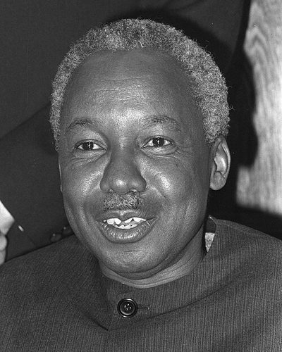

Ideologies / Left
What is Ujamaa (African Socialism)?
Ujamaa (African Socialism) is a political ideology in the Left family. Nyerere argued that socialism is an attitude of mind already present in traditional African society, where nobody starved while others hoarded. The nation should be rebuilt as a family of self reliant village communities that farm together. It rejects both capitalism and the doctrine of class war.
Socialism as the extended family.
Defined from: Julius Nyerere, Ujamaa: The Basis of African Socialism (1962) and the Arusha Declaration (1967)
See how close you are to Ujamaa (African Socialism) Dare a friend to answer as one

.jpg){kind=link}
Where Ujamaa (African Socialism) stands on 13 axes
Each axis runs from 0 to 100. A score of 50 is the middle. On a classic compass it sits in the Authoritarian Left quadrant.
| Axis | Position | Score | In words |
|---|---|---|---|
| EconomyMarket to Planned | 80 | Strongly Planned | |
| OwnershipPrivate to Collective | 90 | Very strongly Collective | |
| RightsLiberty to Security | 65 | Leans Security | |
| GovernmentDemocracy to Autocracy | 75 | Strongly Autocracy | |
| StructureDecentralised to Centralised | 60 | Leans Centralised | |
| NationInternationalist to Nationalist | 65 | Leans Nationalist | |
| ImmigrationMulticulturalist to Assimilationist | 50 | Balanced | |
| ValuesProgressive to Traditional | 60 | Leans Traditional | |
| TechnologyAccelerationist to Precautionary | 60 | Leans Precautionary | |
| EnvironmentIndustrialist to Environmentalist | 55 | Balanced | |
| ReligionSecular to Religious | 35 | Leans Secular | |
| MilitaryPacifist to Militarist | 35 | Leans Pacifist | |
| TradeFree Trade to Protectionist | 85 | Very strongly Protectionist |
Ideologies closest to Ujamaa (African Socialism)
- Morean Utopianism77% alike
- Sankarism77% alike
- Nkrumaism76% alike
- Peronism (Justicialism)74% alike
- Platonic Guardianship74% alike
Its opposite on this map is Crypto Anarchism, at 29%.
Parties near Ujamaa (African Socialism)
Tanganyika African National Union (Tanzania) was the first party or movement to carry it, placed here from The Arusha Declaration (1967).
- Tanganyika African National UnionTanzania. The Arusha Declaration (1967)85% alike
- Communist Party of CubaCuba. Conceptualización del Modelo Económico y Social Cubano (2021)80% alike
- Economic Freedom FightersSouth Africa. Founding Manifesto (2013)79% alike
- Uganda People's Congress of 1969Uganda. The Common Man's Charter (1969)78% alike
Common questions
What is Ujamaa (African Socialism)?
Ujamaa (African Socialism) is a political ideology in the Left family. Nyerere argued that socialism is an attitude of mind already present in traditional African society, where nobody starved while others hoarded. The nation should be rebuilt as a family of self reliant village communities that farm together. It rejects both capitalism and the doctrine of class war.
What does Ujamaa (African Socialism) believe?
In one line: Socialism as the extended family. Its strongest positions are Collective, Protectionist, Planned. Nyerere argued that socialism is an attitude of mind already present in traditional African society, where nobody starved while others hoarded. The nation should be rebuilt as a family of self reliant village communities that farm together. It rejects both capitalism and the doctrine of class war.
Who founded Ujamaa (African Socialism)?
Ujamaa (African Socialism) is defined here from Ujamaa: The Basis of African Socialism (1962) and the Arusha Declaration (1967) by Julius Nyerere. The thinker most tied to it is Julius Nyerere (1922 to 1999).
Is Ujamaa (African Socialism) left wing or right wing?
On a classic two axis compass Ujamaa (African Socialism) falls in the Authoritarian Left quadrant, which means the economic left and the authoritarian side. Left and right hide a lot, though, which is why EthosScales scores it on thirteen separate axes.
How is Ujamaa (African Socialism) different from Morean Utopianism?
They are close: 77% alike. The biggest gaps are on Government, where Ujamaa (African Socialism) scores 75 and Morean Utopianism scores 35, and Immigration, where Ujamaa (African Socialism) scores 50 and Morean Utopianism scores 85. On each axis, 0 is one end and 100 is the other.
Think this is wrong? Suggest a correction. The scores are editorial estimates.